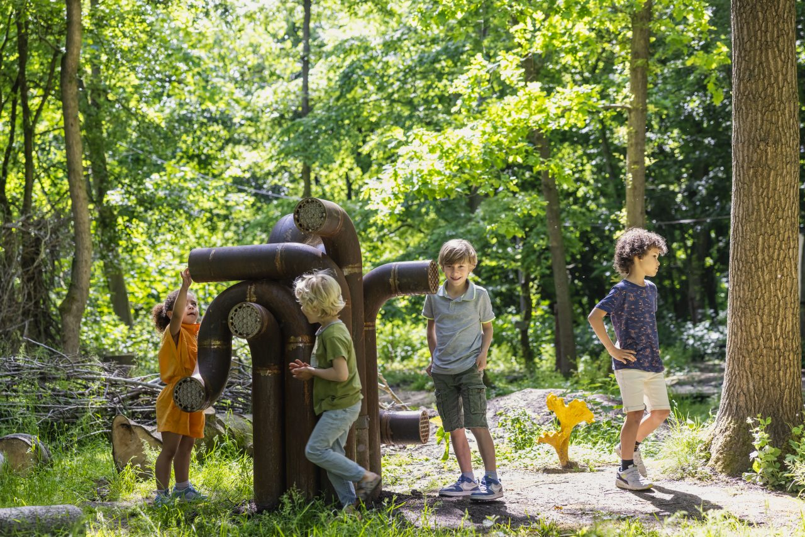

It is not surprising that you would think of words such as ‘shrubs, ‘rake’ or ‘vegetable gardens’. Terms such as ‘sustainability’, ‘liveability’ and ‘a hopeful future’ probably come to mind less quickly, understandably so. The horticultural sector rarely gets the attention it deserves. A pity, because horticulture is amazing! Above all it is essential to our common future.
Once every ten years, all the horticultural greats gather during this International Horticultural Exhibition. Experts from all over the world come together at Floriade to present green solutions that make our cities more enjoyable, beautiful and sustainable. Within the theme ‘Growing Green Cities’, more than 400 national and international participants showcase their latest green innovations, solutions and applications. From state-of-the-art solar roof tiles to amazing vertical façade gardens and from the best ways to grow tomatoes to the latest pruning techniques. You can see, taste and experience it all at Floriade.
Floriade inspires you to live greener and healthier. After a day at the Expo you will go home inspired and full of ideas. For example, how you can enrich your own garden, balcony or living room. In this way you too can contribute to the green city of the future!
Does this sound like music to your ears? Then travel to the greenest and healthiest city of our country: Almere. From spring 2022 Floriade and Almere will be the flourishing centre of the Netherlands for six months. We believe you will love it here so much that you won’t want to leave. Fortunately, Floriade lays the foundation for the future sustainable urban district ‘Hortus’, so who knows…